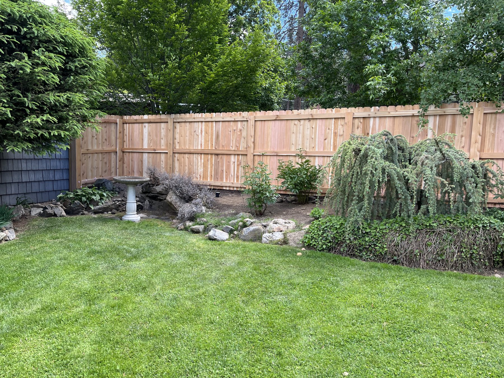
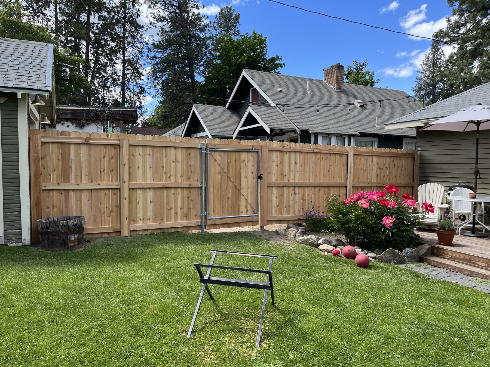
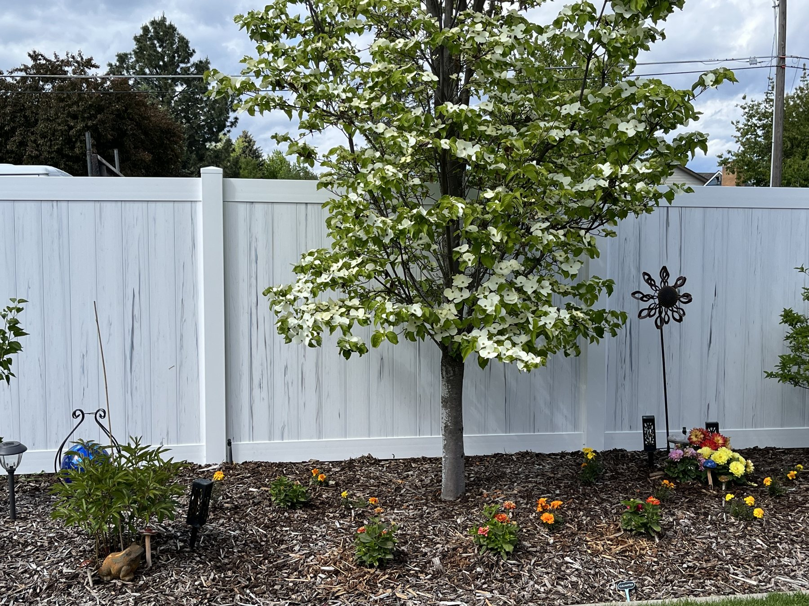
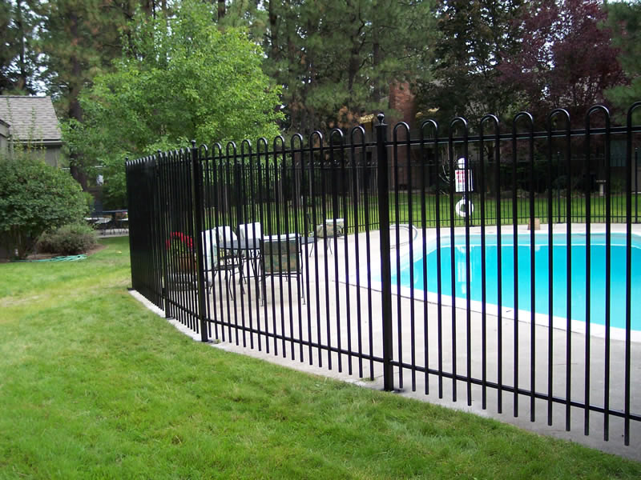
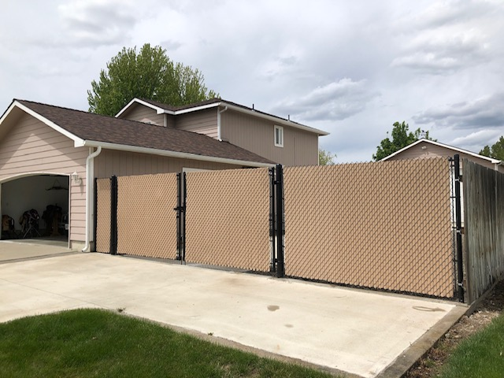
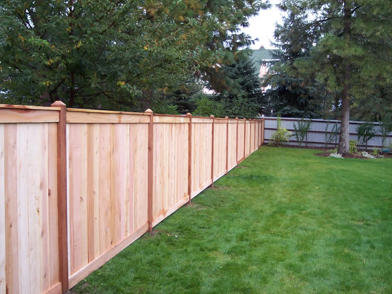
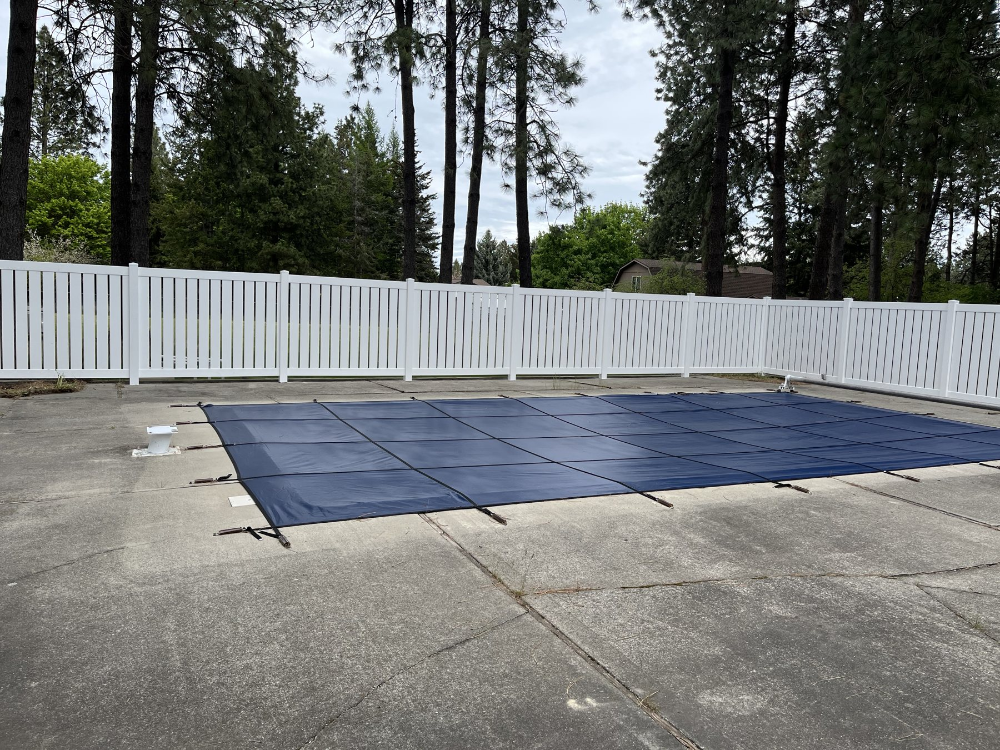
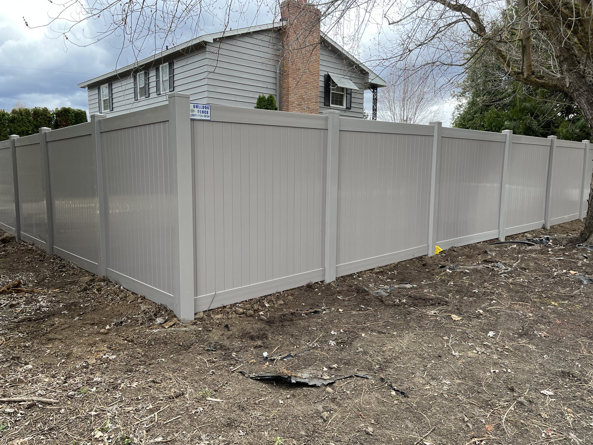
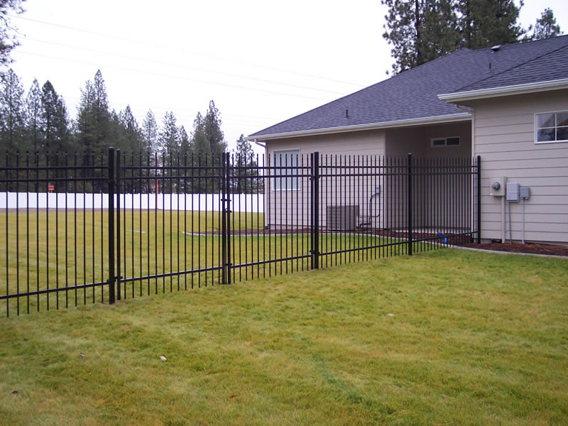
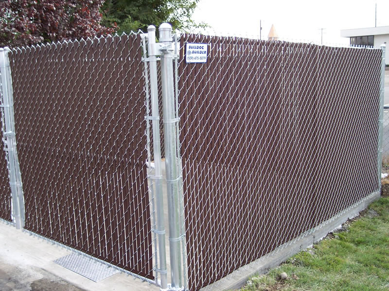

Fences built to withstand time and weather.
Bulldog Fence, Inc. installs wood, vinyl, iron and chain link fences across Spokane County and Eastern Washington. Free on-site estimates, most homes done in one to three days, and installation all year round.
ESTABLISHED 2004
Bulldog Fence, Inc.
1–3 DAYS
Most residential installs
ALL FOUR SEASONS
Winter installs too

Timeline
1–3 days
Most residential installations are completed within one to three days, depending on size, terrain and weather. Larger commercial jobs or complex designs may take longer.
Where they work
Spokane County & beyond
Spokane, Liberty Lake, Deer Park, Rockford, Mead and surrounding Eastern Washington communities. Not sure they cover your area? They ask you to call.
Permits
They can handle it
Permits are needed in most cases. They know the rules in Spokane, Liberty Lake, Deer Park, Rockford and nearby, and can guide you or handle the permit for you.
Four ways to fence a yard.
Pick the one that fits the yard, the budget and how much upkeep you want to do.

Wood
Cedar and pressure-treated pine, including custom styles such as horizontal slats.

Vinyl
Low maintenance. Privacy, picket and decorative styles.

Iron
Wrought iron and ornamental metal, for decorative or secure fencing.

Chain link
Galvanized or vinyl-coated, with privacy slats available.
Six answers, and we can talk numbers.
These are the questions we ask on the phone anyway. Answer them here and bring the result to the measure.
Recent projects, from their gallery.
Wood, vinyl, iron and chain link, built in Spokane County and the surrounding communities.





Straight answers, from their own FAQ.
Permits
In most cases a permit is needed, especially for fences over a certain height or inside city limits and HOA areas. They can guide you through it or handle it for you.
Timeline
Most residential installations take one to three days, depending on size, terrain and weather. You get an accurate timeline at the estimate.
All four seasons
They install year-round, winter included. Frozen ground or heavy snow can cause delays, and they say they will be upfront about scheduling.
Wood care
Seal or stain every few years to protect against moisture and UV.
Vinyl, iron and chain link care
Vinyl: an occasional rinse is usually enough. Iron: touch up paint where it is scratched to prevent rust. Chain link: trim vegetation and check for damage now and then.
Gates
Walk gates, driveway gates, double swing gates and sliding gates, plus automated and keypad entry systems, common with commercial and iron fencing.
Otis Orchards, WA 99027
Main line (509) 475-5079 · ken@bulldogfencespokane.com
Free on-site estimate
They walk the property, discuss your needs and give a clear, no-obligation quote. Bring the description from the planner and the visit goes faster.